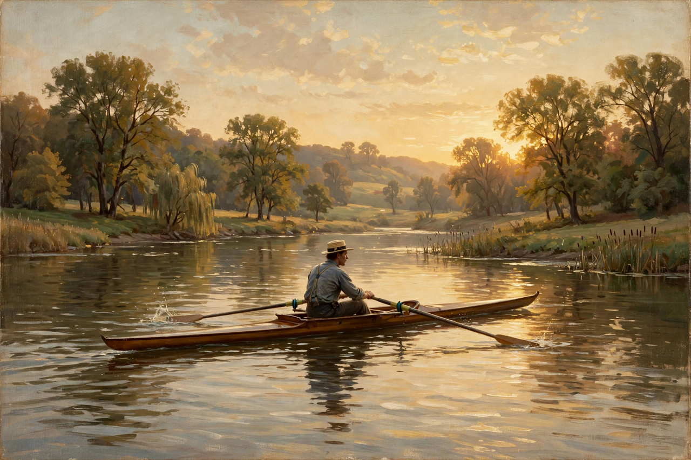

Wikipedia — The Free Encyclopedia

Thomas Cowperthwait Eakins (July 25, 1844 – June 25, 1916) was an American realist painter, photographer, sculptor and fine-arts educator. He is widely acknowledged to be one of the most important American artists of his time, known for unsparing portraits and for scenes of rowing, boxing and surgery in his native Philadelphia.
Eakins studied at the Pennsylvania Academy of the Fine Arts, took anatomy classes at Jefferson Medical College, and from 1866 to 1870 trained in Paris under Jean-Léon Gérôme. Returning to Philadelphia, he painted his celebrated series of rowing pictures, culminating in Max Schmitt in a Single Scull (1871), and in 1875 The Gross Clinic, a monumental portrait of the surgeon Samuel D. Gross operating before students — now regarded as a landmark of American art, though its frank realism shocked contemporaries.
As a teacher at the Pennsylvania Academy from 1876, Eakins insisted on study from life and on anatomical dissection, unusually for the period. His removal of a male model's loincloth before a class including women caused a scandal that forced his resignation in 1886. He continued to teach, paint portraits of friends and intellectuals, and pursue photography and motion studies, often in collaboration with Eadweard Muybridge.
Recognition came slowly; major honours arrived only near the end of his life. His uncompromising naturalism influenced the Ashcan School and the course of American realism in the twentieth century.